Since the beginning, Fusion has supported a document type that combined parts and assemblies into a single document. In fact, it didn’t even differentiate between a part and an assembly. A single document can contain all the data for any number of components and also define how those components are assembled. This approach has its pros and cons. The primary pros are its high flexibility and simple data management, since it’s a single file. There are several cons to having everything in a single file.
Previously, there was a single design type, which represented an assembly, one or more parts, or a combination of the two. Whether a component was a part or an assembly wasn’t explicitly specified, but was inferred from the contents of the component. For example, if a component only contains bodies, you can assume it is a part. If a component contains occurrences of other components, you can assume it is an assembly. It is also possible for a component to include both bodies and occurrences, which is strange and is another con resulting from the flexibility provided by hybrid designs.
Now there are three distinct design types: hybrid, part, and assembly.
Hybrid – Fusion has always supported a hybrid design: a single design that can contain both parts and assemblies with both internal and external references.
Part - A part design is a new type of design that only supports modeling. A part design typically contains one or more bodies, along with all the construction geometry, sketches, and features used to create them. It does not contain other components or occurrences.
Assembly - An assembly design is a new design type that supports only assembly modeling, and all parts and subassemblies used in the assembly must be external.
When creating a new design document, you choose one of these three types using the dialog shown below.
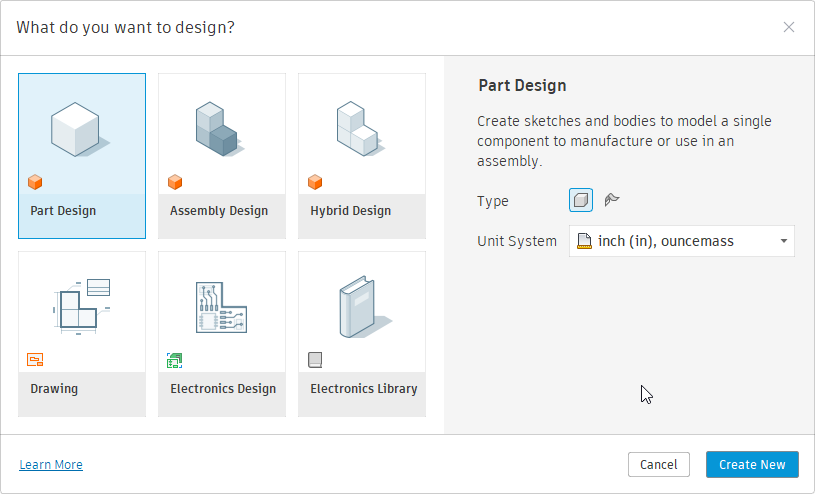
Two things change depending on the design type you choose: the user interface and the functionality that’s available. Let’s look first at the user interface. Remember that the main toolbar is organized into tabs, each containing panels that contain the commands buttons.
First, here’s the main toolbar for the previous release. It provides access to all Fusion functionality for part and assembly modeling, since hybrid design was the only type supported.
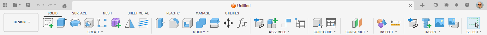
Shown below is the new main toolbar when a hybrid design is active. It is the same as the previous main toolbar, including the ASSEMBLE panel. Any existing add-ins should continue to function normally when a hybrid design is active.
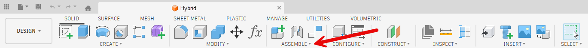
Below is the main toolbar when an assembly design is active. It doesn’t include the ASSEMBLE panel; instead, it has an ASSEMBLY tab that organizes assembly-related commands into panels. If you have an assembly-related command you want to be available when an assembly design is active, you’ll need to update your add-in to add it to this new user interface layout. This is discussed in more detail in the section on updating your commands.
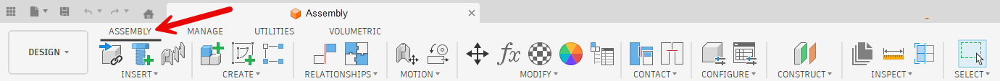
Below is the main toolbar when a part design is active. It’s essentially the same as the hybrid toolbar, but it lacks the ASSEMBLE panel you’re familiar with. It does contain a panel named ASSEMBLE, but it is a new panel and differs from the previous ASSEMBLE panel. The new ASSEMBLE panel contains a single command to insert this part into an assembly. Even though it is named ASSEMBLE, the ID of this panel differs from the previous ASSEMBLE panel, so any add-ins that add commands to the ASSEMBLE panel will not accidentally add them to this new panel. Those commands will not be available for part designs.
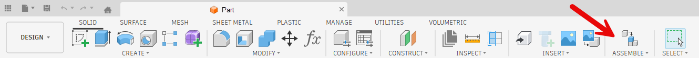
Depending on the active design type, Fusion now exhibits different behaviors. These behavior changes are most likely to cause problems when updating an add-in to work with these new workflows and will require the most work to update your add-in.
Hybrid – Because hybrid designs are what we had before, there is no change in behavior when a hybrid design is active, so the logic of your program shouldn’t require any changes.
Part – If you have a command that is modeling-specific, it shouldn’t require any changes when a part design is active. It’s also likely that it won’t require any UI changes, since the UI layout uses the same toolbar panels as the hybrid design. However, many commands that appear to be modeling-specific also include assembly functionality. A typical example of this is a command that creates new geometry and creates a new component for that geometry. Creating a new component is not supported in a part design because it is an assembly-specific action and will fail.
Assembly – When an assembly design is active, creating features and other modeling operations are not supported and will fail if attempted.
To examine potential problems and solutions, let’s look at one of the samples delivered with Fusion. The previous Spur Gear sample adds a new command to the CREATE panel on the SOLID tab, as shown below. When run, it creates a new local component and adds gear geometry to it. Because only hybrid designs existed in the past, this would always work. Now, there are three design types to consider when writing an add-in that impact both the user interface and the functional capabilities.
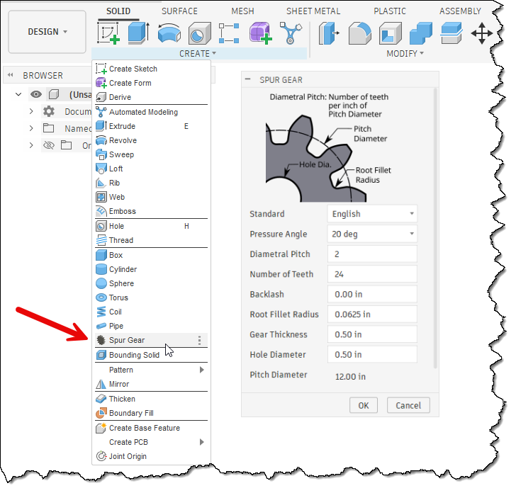
You first need to decide which design types your command will support and where in the user interface the command best fits. For the Spur Gear sample, the command was in the CREATE panel, and this will continue to work for both hybrid and part designs. However, if we want the command to be available in an assembly design, it needs to be added to a second location that’s visible when an assembly design is active.
The general rule when adding any command is to determine the most logical location where the user will look for it. For the Spur Gear sample, the INSERT panel seems to make the most sense, since it lets you insert a new component that represents a gear.
There haven’t been any changes to the API related to the user interface, but in some cases Fusion has changed how the UI is laid out, and you need to update your program to conform to the new layout. The Write user interface to a file API Sample program can be used to write out the UI structure to help you understand how to add your command to a specific location. This is also described in the User Manual in the User Interface Customization with Fusion’s API topic.
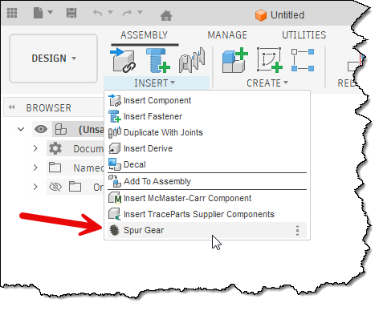
The next step is to determine whether the command is valid across all design types. It will be common for a command to be available only in part or hybrid designs, or only in assembly designs. You control where it’s available by deciding where to put the command button in the user interface.
However, there are some commands that you want available across all three design types. The spur gear command is a good example of this. However, the command needs to behave differently for each design type. For the spur gear sample, this new logic begins in the handler for the commandCreated event. Depending on the design type, the dialog varies slightly.
When executed in a part design, the dialog remains unchanged and includes only the inputs required to define a gear.
For a hybrid design, it adds three new command inputs: a StringValueCommandInput, a ButtonRowCommandInput, and a BoolValueCommandInput. The StringValueCommandInput allows the user to specify the new component's name. Because a hybrid design supports both internal and external components, the command uses the ButtonRowCommandInput to let the user choose which type to create. If they choose to create an external component, the BoolValueCommandInput is displayed. When clicked, it opens a dialog that lets the user select the cloud folder where the new component will be saved.
When executed in a part design, the dialog remains unchanged and includes only the inputs required to define a gear.
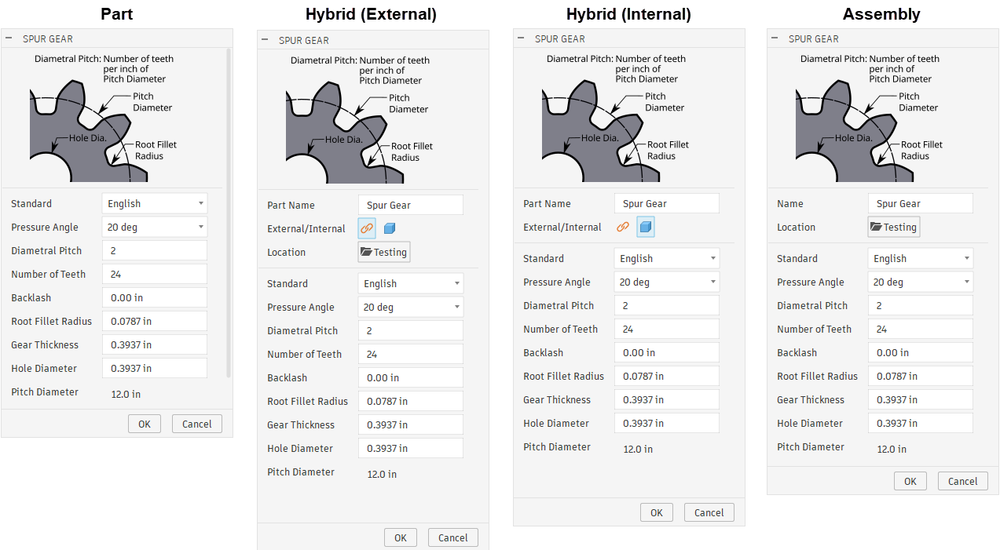
To support working with these new design types, a new property has been added to the API. It is the Design.designIntent property. This property indicates whether the design is a part, assembly, or hybrid design, so you can use this information to apply different logic for each design type.
In addition to this property, two new methods have been added to the API to support these new workflows more fully. The first is the Occurrences.addNewExternalComponent method. This method is equivalent to interactively using the Create Component command and selecting the option to create an external component, as shown below. When doing this, you need to provide the cloud folder and the file name. This method creates a new occurrence that is an external reference, and the referenced file is in-memory only and not saved to the cloud until the assembly is saved. Using the API, you can access this new component through the created occurrence and add geometry to it. When using the “Create Component” command, the new component is activated in Edit in Place. That does not happen with the API, and “Edit in Place” is not required when using the API to add geometry or edit the new component.
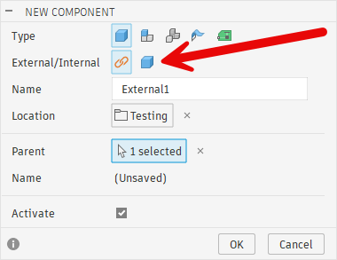
The second new capability is the ability to display a dialog that prompts the user to select a cloud folder. The API already supported selecting a local file or folder and a cloud file, but it lacked support for selecting a cloud folder. Now there is the UserInterface.createCloudFolderDialog method. In the new spur gear dialog, this method is used when the user clicks the “Location” button.
Although the dialog is unchanged, when a part design is active, the command's logic changes. For hybrid and assembly designs, a new local or external component is created for the gear. Because parts don’t support components, this can’t be done in a part design. In this case, the spur gear command now creates the gear geometry directly in the root component of the active part design. The assumption is that the user has a design open that will be a gear, so the command creates the geometry directly within it.
Let’s look at the code needed to handle the creation of the command and the final action when the command is executed. We’ll use a simple command that creates a square block with a single size. For a part design, it creates a new body in the root component. In an assembly design, it creates a new external component and adds the new body to it. For a hybrid design, it gives the user a choice between an external and an internal component and adds the new body to either.
Below is the code that adds the command to the CREATE panel of the SOLID tab for part and hybrid designs.
workspace = ui.workspaces.itemById('FusionSolidEnvironment')
# Add the command to the CREATE panel in the SOLID tab, below the existing Box command.
# This is used for part and hybrid designs.
panel = workspace.toolbarPanels.itemById('SolidCreatePanel')
control = panel.controls.addCommand(cmd_def, 'PrimitiveBox', False)
And here is the result.
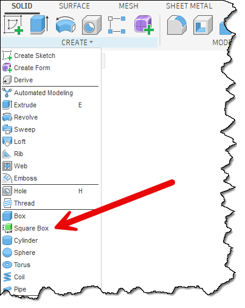
Here’s the code to add the button to the INSERT panel in the ASSEMBLY tab so the command is available in an assembly design.
# Add the command to the INSERT panel in the ASSEMBLY tab, below the existing Insert Fastener command.
# This is used for assembly designs.
panel = workspace.toolbarPanels.itemById('InsertAssemblePanel')
control = panel.controls.addCommand(cmd_def, 'FusionFastenersCommand', False)
And here is the result.
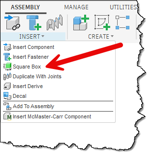
The code below creates the command dialog, which differs for hybrid, assembly, and part designs. It uses the Design.designIntent property to determine the currently active design type; the code below applies to a hybrid design. It adds a StringValueInput to get the name to use when creating the new component for the box. It then creates a ButtonRowCommandInput to let the user choose whether to create an external or internal component. It also creates a BoolValueCommandInput that serves as a button to let the user select a cloud folder where the external component will be created. Finally, it adds a separator to distinguish the component definition from the box size input visually.
if des.designIntent == adsk.fusion.DesignIntentTypes.HybridDesignIntentType:
# Create the dialog for a hybrid design. This includes a string input to get the name
# of the component, buttons to specifiy if an external or internal component should
# be created, and if it is external, a button that will allow the user to specify
# the folder where it will be saved.
# Add a string input to get the name of the component.
inputs.addStringValueInput('componentName', 'Part Name', 'Square Box')
# Add a button row of two buttons to let the user specify a local or external component.
# The external button is pressed to make it the default setting.
externalInternalInput = inputs.addButtonRowCommandInput('externalInternal', 'External/Internal', False)
iconPath = os.path.join(os.path.dirname(os.path.abspath(__file__)), 'resources', 'External')
externalInternalInput.listItems.add('External', True, iconPath)
iconPath = os.path.join(os.path.dirname(os.path.abspath(__file__)), 'resources', 'Internal')
externalInternalInput.listItems.add('Internal', False, iconPath)
# Add a Boolean button that will be used to display a dialog to choose a folder where the
# external component will be saved. The active folder in the data panel is used as the default.
iconPath = os.path.join(os.path.dirname(os.path.abspath(__file__)), 'resources', 'FolderIcon')
folderButton = inputs.addBoolValueInput('cloudFolder', 'Location', False, iconPath)
folderButton.text = app.data.activeFolder.name
# Save the current folder to a global variable.
folder = app.data.activeFolder
# Add a separator to the dialog.
inputs.addSeparatorCommandInput('separator')
To allow the dialog to behave correctly, the following code is used in the InputChanged event handler. When the user clicks a button in the ButtonRowCommandInput, the code checks which button was clicked and hides or displays the BoolValueCommandInput to select a cloud folder. The InputChanged event also handles the case when they click the BoolValueCommandInput and uses the new UserInterface.createCloudFolderDialog method to let the user choose a cloud folder.
# This event handler is called when the user changes anything in the command dialog
# allowing you to modify values of other inputs based on that change.
def command_input_changed(args: adsk.core.InputChangedEventArgs):
changed_input = args.input
inputs = args.inputs
if changed_input.id == 'externalInternal':
# Check the state of the button rows to see if it is internal or external
# and change the visibility of the button to choose the folder.
buttonRowInput: adsk.core.ButtonRowCommandInput = inputs.itemById('externalInternal')
isExternal = buttonRowInput.listItems[0].isSelected
folderButton = inputs.itemById('cloudFolder')
if isExternal:
folderButton.isVisible = True
else:
folderButton.isVisible = False
elif changed_input.id == 'cloudFolder':
# The Boolean button was clicked to select the cloud folder where the
# external component will be saved.
folderButton: adsk.core.BoolValueCommandInput = inputs.itemById('cloudFolder')
# Set the button to an unpressed state, since it's not used to indicate a state.
folderButton.value = False
# Display the cloud folder dialog.
cloudDialog = ui.createCloudFolderDialog()
global folder
cloudDialog.initialFolder = folder
result = cloudDialog.showDialog()
if result == adsk.core.DialogResults.DialogOK:
# Update the global variable and the dialog with the new folder name.
folder = cloudDialog.dataFolder
folderButton.text = folder.name
Below is the result of the creation and reaction when a button in the ButtonRowCommandInput is clicked. The dialog on the left appears when an external component is created and requires a cloud folder to be selected. The dialog on the right is for an internal component, so the BoolValueCommandInput is hidden because a cloud folder isn’t needed.
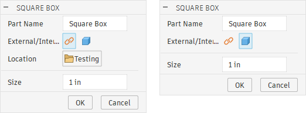
The code below is used when an assembly design is active. It creates a StringValueCommandInput to get the component name and a BoolValueCommandInput to get the cloud folder. Because all components in an assembly design are external, there's no option to choose internal or external components. The same event handler is used when the BoolValueCommandInput is clicked to select the cloud folder.
elif des.designIntent == adsk.fusion.DesignIntentTypes.AssemblyDesignIntentType:
# Create the dialog for an assembly design. This includes a string input to get the name
# of the component, and a button that will allow the user to specify the folder where it
# will be saved.
# Add a string input to get the name of the component.
inputs.addStringValueInput('componentName', 'Part Name', 'Square Box')
# Add a Boolean button that will be used to display a dialog to choose a folder where the
# external component will be saved.
imagePath = os.path.join(os.path.dirname(os.path.abspath(__file__)), 'resources', 'FolderIcon')
folderButton = inputs.addBoolValueInput('cloudFolder', 'Location', False, imagePath)
folderButton.text = app.data.activeFolder.name
folder = app.data.activeFolder
The created dialog is shown below.
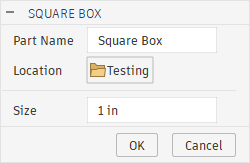
The code below is used for all design types and creates the ValueCommandInput to allow the user to specify the box size.
elif des.designIntent == adsk.fusion.DesignIntentTypes.AssemblyDesignIntentType:
# Add a value input to get the size of the box. This is needed for hybrid, part, and assembly.
defaultLengthUnits = des.unitsManager.defaultLengthUnits
default_value = adsk.core.ValueInput.createByString('1')
inputs.addValueInput('boxSize', 'Size', defaultLengthUnits, default_value)
The dialog for a part design is shown below.
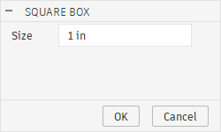
After the correct dialog is displayed to the user to gather the information needed for the different design types, the next step is to use that information to create the geometry. Below is the first section of the CommandExecute event handler for a part design. It starts by getting the size value from the ValueCommandInput. This is used for all design types. The next step is to get the component where the box will be created. For a part design, this is the root component; it gets it and assigns it to the targetComp variable.
def command_execute(args: adsk.core.CommandEventArgs):
inputs = args.command.commandInputs
# Get the size of the box from the command input.
valInput: adsk.core.ValueCommandInput = inputs.itemById('boxSize')
boxSizeExpression = valInput.expression
# Determine the component where the box needs to be created. This changes based on the
# type of design that is active.
targetComp: adsk.fusion.Component = None
if des.designIntent == adsk.fusion.DesignIntentTypes.PartDesignIntentType:
# This is a part design, so create the box in the root component.
targetComp = des.rootComponent
The code below is for an assembly design. This retrieves the name to use for the new component, then creates a new external component in the DataFolder specified by the user in the dialog. The new external component is created using the Occurrences. addNewExternalComponent. This creates a new external component, but it is in-memory and isn’t saved to the cloud until the parent assembly is saved. It retrieves the external component from the created Occurrence and assigns it to the targetComp variable.
elif des.designIntent == adsk.fusion.DesignIntentTypes.AssemblyDesignIntentType:
# Get the name of the component.
stringInput: adsk.core.StringValueCommandInput = inputs.itemById('componentName')
compName = stringInput.value
# Create a new external component where the box will be created.
occ = des.rootComponent.occurrences.addNewExternalComponent(compName, folder, adsk.core.Matrix3D.create())
targetComp = occ.component
Next, here’s the code for a hybrid design. It retrieves the component name, determines whether the new component will be internal or external, creates a new occurrence accordingly, and assigns the new component to the targetComp variable.
elif des.designIntent == adsk.fusion.DesignIntentTypes.HybridDesignIntentType:
# Get the name of the component.
stringInput: adsk.core.StringValueCommandInput = inputs.itemById('componentName')
compName = stringInput.value
# Determine if an external or internal component should be created.
buttonRowInput: adsk.core.ButtonRowCommandInput = inputs.itemById('externalInternal')
isExternal = buttonRowInput.listItems[0].isSelected
if isExternal:
# Create a new external component where the box will be created.
occ = des.rootComponent.occurrences.addNewExternalComponent(compName, folder, adsk.core.Matrix3D.create())
targetComp = occ.component
else:
# An internal component for the box needs to be created.
occ = des.rootComponent.occurrences.addNewComponent(adsk.core.Matrix3D.create())
occ.component.name = compName
targetComp = occ.component
Finally, here’s the code that’s called for all three design types that creates a box in the provided component of the specified size.
# Create a box of the specified size in the specified component.
boxBody = CreateBox(targetComp, boxSizeExpression)
For completeness, here’s the function that creates the box. It doesn’t care which design type is active and blindly generates geometry representing a square box within the provided component.
def CreateBox(targetComp: adsk.fusion.Component, sizeExpression: str) -> adsk.fusion.BRepBody:
# Evaluate the size expression to get the value.
size = des.unitsManager.evaluateExpression(sizeExpression)
sk = targetComp.sketches.add(targetComp.xYConstructionPlane)
lines = sk.sketchCurves.sketchLines
rectLines = lines.addCenterPointRectangle(adsk.core.Point3D.create(0, 0, 0),
adsk.core.Point3D.create(size/2, size/2, 0))
# Add dimension constraints to control the size of the Box.
dims = sk.sketchDimensions
horizDim = dims.addDistanceDimension(rectLines[0].startSketchPoint,
rectLines[0].endSketchPoint,
adsk.fusion.DimensionOrientations.HorizontalDimensionOrientation,
adsk.core.Point3D.create(0, size * 1.1, 0))
horizDim.parameter.expression = sizeExpression
horizDim.parameter.name = 'Box Size'
vertDim = dims.addDistanceDimension(rectLines[1].startSketchPoint,
rectLines[1].endSketchPoint,
adsk.fusion.DimensionOrientations.VerticalDimensionOrientation,
adsk.core.Point3D.create(size * 1.1, 0, 0))
vertDim.parameter.expression = horizDim.parameter.name
# Extrude the rectangle to create the box.
extInput = targetComp.features.extrudeFeatures.createInput(sk.profiles[0], adsk.fusion.FeatureOperations.NewBodyFeatureOperation)
inputVal = adsk.core.ValueInput.createByString(horizDim.parameter.name)
extInput.setSymmetricExtent(inputVal, True)
extrude = targetComp.features.extrudeFeatures.add(extInput)
return extrude.bodies[0]